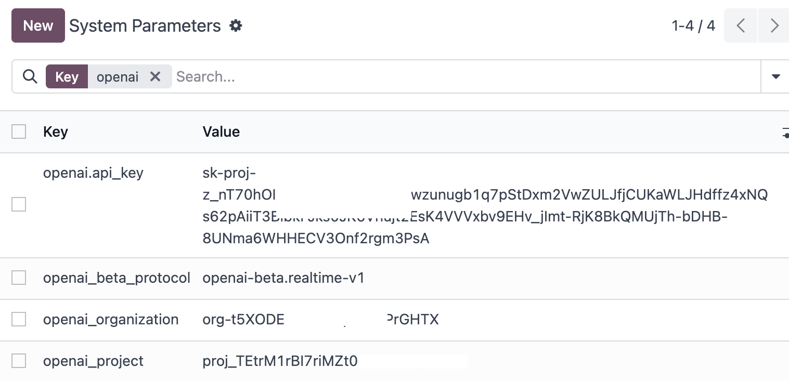
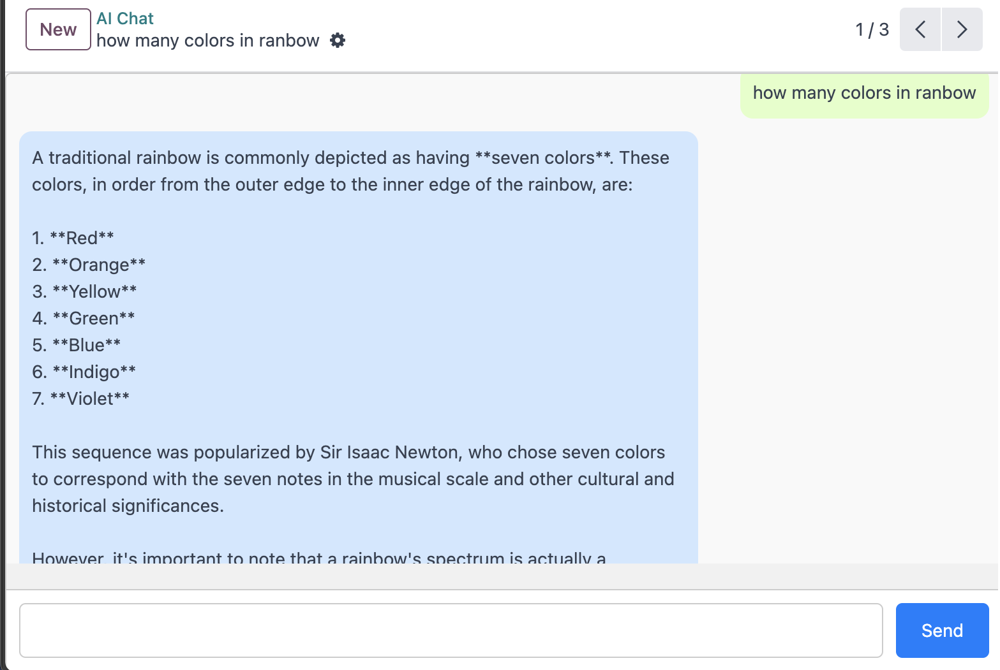

ChatGPT Integration for Odoo
This module integrates ChatGPT with Odoo. To use this integration, you need to set
up the following parameters in the Odoo system parameters (ir.config_parameter):
- openai.api_key: Your ChatGPT API key.
-
openai.organization_id: Your ChatGPT
organization ID.
- openai.project_id: Your ChatGPT project ID.
These parameters are required for the module to function correctly.

How to Get Your ChatGPT API Key, Organization ID, and Project ID
-
Go to the
OpenAI Platform
and log in with your account.
-
Navigate to the API Keys section in the
dashboard.
-
Click on Create new secret key to generate
your API key. Copy and save it securely as
you won't be able to view it again.
-
In the same dashboard, go to the
Organization section to find your
Organization ID.
-
For the Project ID, navigate to the
Projects section and select the relevant
project. The Project ID will be displayed on
the project details page.
Installing OpenAI Python Package
To interact with the ChatGPT API in your Odoo module, you need to install the
OpenAI Python package. Use the following command:
pip install openai
If you're using Odoo's virtual environment, make sure to activate it first:
source path/to/odoo/env/bin/activate
Then, install the package:
pip install openai
Note: Make sure to add the OpenAI package to your requirements.txt
file if you are deploying your Odoo instance in a production environment.
Example of the Module
